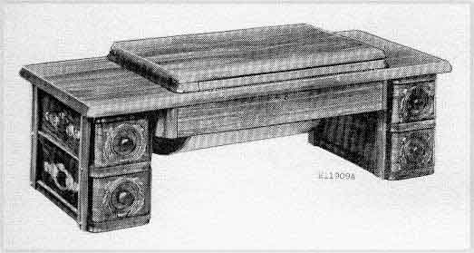

Singer Drop-Head Bases
T17
Set No. 3
5 drawers, open case, embossed
No. 15, 66, 115, 127 & 201

© Helen Scarth 2002. All Rights
Reserved
This web page or any portion of it
may not be reproduced in any form without the prior written permission of the
copyright holder